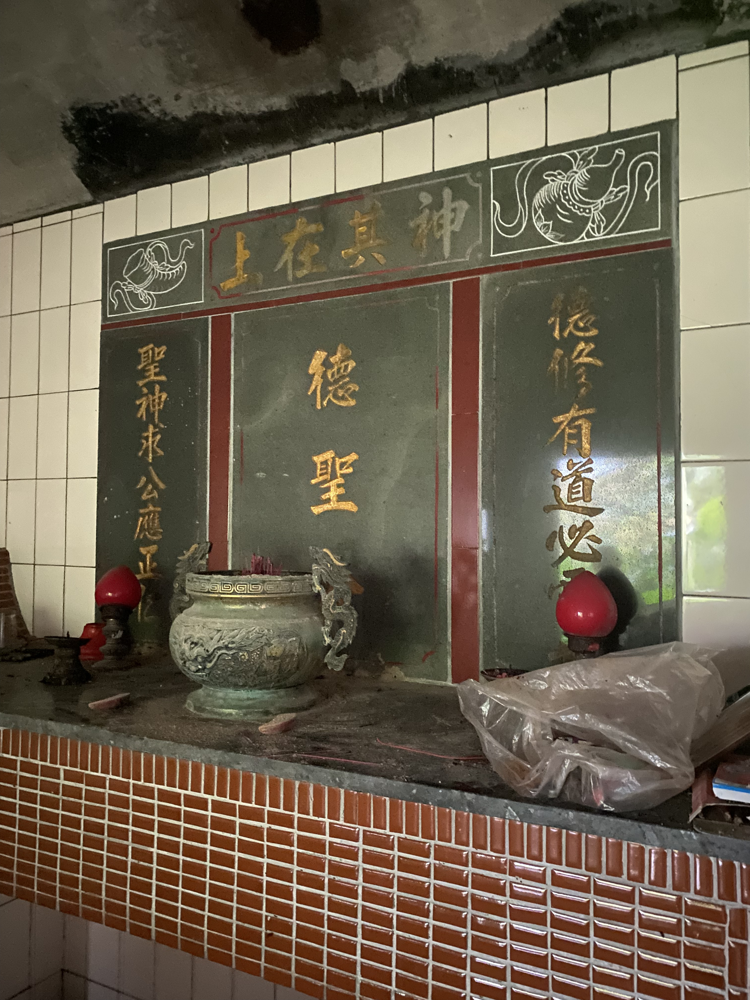
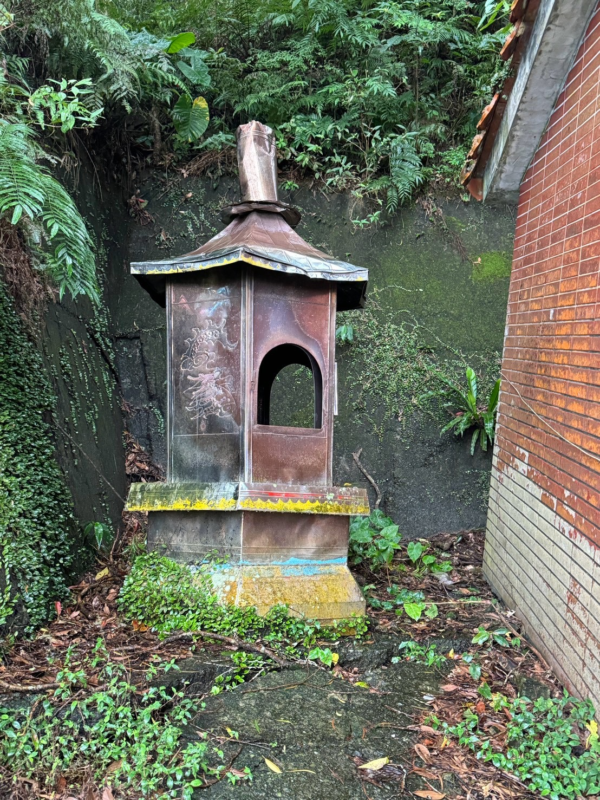
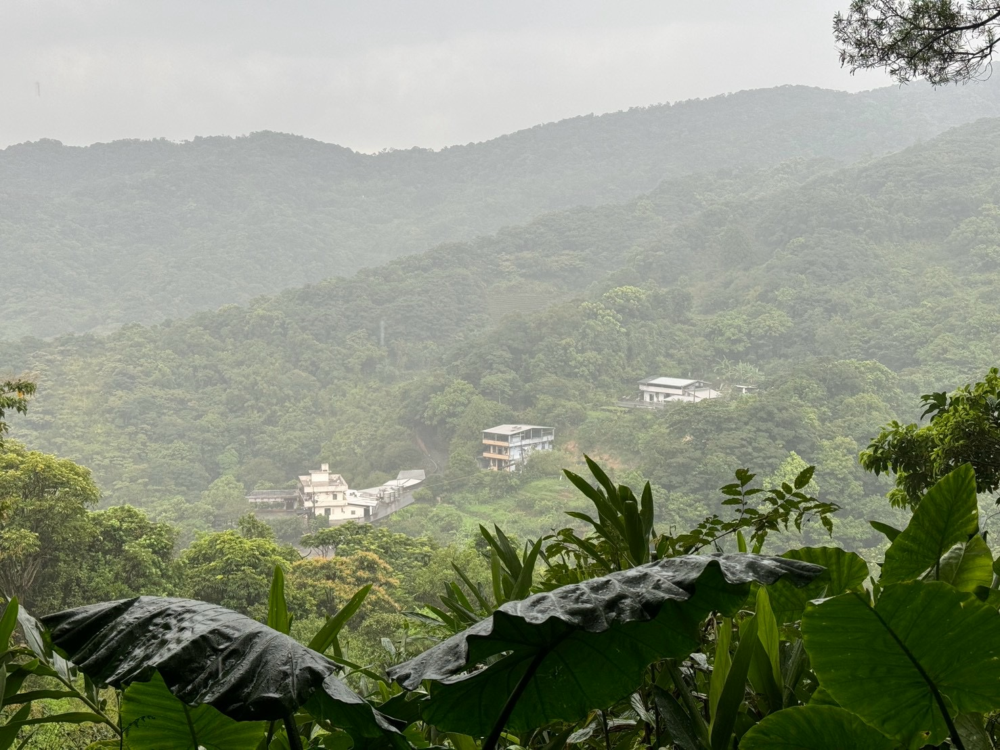

<!DOCTYPE html>
<html lang="zh-Hant">

<head>
    <meta charset="utf-8">

    <title>德聖公廟 360° 全景</title>

    <link rel="stylesheet"
          href="./pannellum/pannellum.css">

    <script src="./pannellum/pannellum.js"></script>

    <style>
        html, body{
            margin: 0;
            padding: 0;
            overflow: hidden;
        }
        #panorama {
            width: 100%;
            height: 100vh;
        } 

    </style>
</head>

<body>

<div id="panorama"></div>

<script>

pannellum.viewer('panorama', {
    "default": {
        "firstScene": "scene1",
        "autoLoad": true,
        "author": "Yen-Yu Chen"
    },

    "scenes":{
        "scene1": {
            "type": "equirectangular",
            "panorama": "./content/photo/desheng/20260812_1446_desheng_03_inside.JPG",
            "title": "德聖公廟內部景觀",
            "pitch": 0,
            "yaw": 9,
            "hfov": 123,
            "compass": true,
            "northOffset": 150,
            "hotSpots": [
                {
                    "pitch": 10,
                    "yaw": 10,
                    "type": "info",
                    "text": `
                        <div style="text-align: center;">
                            <br/>
                            <strong>牌位與對聯</strong><br/>
                            祭祀對象為「德聖公」，對聯寫著「德修有道必靈世，聖神求公應正仁─神在其上」。
                        </div>
                    `
                },
                {
                    "pitch": 0,
                    "yaw": 320,
                    "type": "info",
                    "text": `
                        <div style="text-align: center;">
                            <br/>
                            <strong>金亭</strong><br/>
                            面對廟宇的左側有著約與廟同高的金亭，可惜原有的彩繪已然掉色。
                        </div>
                    `
                },
                {
                    "pitch": -50,
                    "yaw": 192,
                    "type": "info",
                    "text": `
                        <div style="text-align: center;">
                            <strong>傾斜的地板</strong><br/>
                            廟宇地面朝此方向傾斜 10°，因此站在廟內會有眩暈、心理不適感。
                        </div>
                    `
                },
                {
                    "pitch": -10,
                    "yaw": 200,
                    "type": "info",
                    "text": `
                        <div style="text-align: center;">
                            <br/>
                            <strong>廟宇外的景色</strong><br/>
                        </div>
                    `
                }
            ]
        }
    }
});


</script>

</body>
</html>